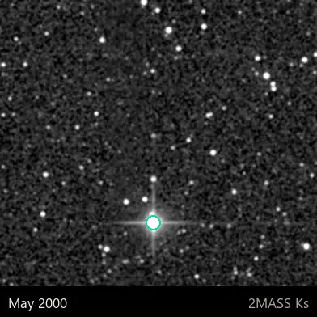

Kırmızı cüce yıldız · M4
Barnard Yıldızı
Gökyüzündeki yeri en hızlı değişen yıldız: yılda 10.4 yay saniyesi, yaklaşık 1.7 SPHEREx pikseli.

Yıldızlar da yer değiştirir, ama çok daha yavaş. Bu yıldız, bütün yıldızlar içinde gökyüzündeki yeri en hızlı değişen yıldızdır: yılda iki SPHEREx pikselinden az. Numaralar, aracın ondan ne çıkardığını gösteriyor.
Neye bakmalı
Görüntüler üç ziyaret arasında döner: yıldız her seferinde kesikli çizgiyi izleyerek kuzeye kabaca bir piksel sıçrar. Merkezi kısa dalga boylu dedektörleri doyuracak kadar parlaktır; bu yüzden en temiz görünümü D5 verir. Tablo, bu görüntülerden ölçülen kaymayı kataloğun öngörüsüyle karşılaştırır.
SPHEREx’in bu noktaya ait 360 pozu var: 15 Ağustos 2025 ile 22 Eylül 2026 arasında.
Chronosphere’de aç: Barnard Yıldızı
Çeyrek yüzyıl boyunca

Kaynaklar: SPHEREx, NASA/JPL-Caltech, IRSA · SIMBAD · Gaia DR3 · 2MASS · WISE, NEOWISE · Wikipedia